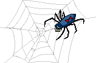

Welcome to the World Wide Ruin
Outside looks pretty spooky... Better stay here just in case.
 Watch out for construction on this site!
Watch out for construction on this site!
This site was heavily inspired by melon king!


Explore other ruins here!
Old Web Ruinz
7/7/1994 - Hi Humans (and Robots?)
Hello everyone! My name is Sir Mammingtonham and welcome to my little corner of the web! Here you will find awesome links, epic code, and a variety of interesting topics. Stick around for a while and explore the World Wide Ruin! I'm sure you will learn a lot about me and the internet.
-M.
Oh, and check out the about page.
4/20/1996 - My Take on the GIF Pronunciation Debate.
It should be pronounced "gif" (and not "jif"), because:
- It avoids confusion with the JIF brand of peanut butter
- It’s Graphical Interchange Format, not Giraffe-ical Interchange Format
- It just makes sense
 Click the void to go back to DA FUTURE!
Click the void to go back to DA FUTURE!